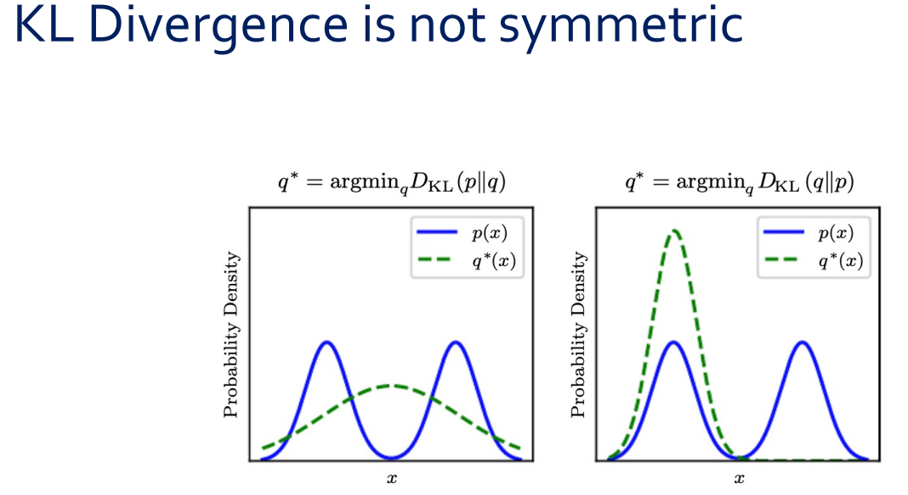

Foundation of Deep Learning
확률론, 정보이론, 수치 최적화의 핵심 개념과 딥러닝에서의 역할
0.1 개요
딥러닝을 이해하기 위해서는 세 가지 수학적 기초가 필수적이다.
- 확률론 (Probability Theory): 데이터와 모델의 불확실성을 다루는 언어
- 정보이론 (Information Theory): 확률 분포 간의 차이를 정량화하는 도구
- 수치 최적화 (Numerical Optimization): 모델 파라미터를 학습하는 메커니즘
이 세 기둥 위에 과적합(overfitting)이라는 핵심 도전이 놓여 있으며, 이를 극복하는 것이 딥러닝 연구의 중심 과제이다.
1 확률론 (Probability Theory)
1.1 확률변수 (Random Variable)
확률변수를 이해하는 데에는 두 가지 수준이 있다.
쉬운 정의: 다양한 값을 랜덤하게 취할 수 있는 변수이다. 예를 들어, 주사위를 던지면 결과값 \(X\)는 \(\{1,2,3,4,5,6\}\) 중 하나를 취한다.
엄밀한 정의: 확률변수는 표본 공간(sample space) \(\Omega\)의 원소를 가측 공간(measurable space), 보통 실수 \(\mathbb{R}\)로 대응시키는 함수(mapping)이다.
\[\text{Real world event} \xrightarrow{\text{Random variable}} \text{Probability (a measurable value)}\]
채널의 상태를 나타내는 CSI(Channel State Information) \(\mathbf{h}\)가 바로 확률변수이다. 채널 환경이라는 “real world event”를 복소수 벡터라는 “measurable value”로 매핑하는 것이다.
확률변수는 이산(discrete) 또는 연속(continuous)으로 나뉘며, 각각을 기술하는 함수가 다르다.
1.2 이산 확률변수의 확률 분포 — PMF
이산 확률변수는 확률질량함수(Probability Mass Function, PMF) \(P(x)\)로 기술된다. 대표적 예시로 Bernoulli 분포가 있다(동전 던지기와 같은 \(\{0, 1\}\) 결과).
PMF는 세 가지 공리를 만족해야 한다.
- \(P(\cdot)\)의 정의역은 \(x\)의 모든 가능한 상태의 집합이어야 한다.
- \(\forall x \in \mathbf{x},\; 0 \le P(x) \le 1\)
- \(\sum_{x \in \mathbf{x}} P(x) = 1\) (정규화 조건)
1.3 연속 확률변수의 확률 분포 — PDF
연속 확률변수는 확률밀도함수(Probability Density Function, PDF) \(p(x)\)로 기술된다. Gaussian(정규) 분포가 대표적이며, \(\mu\)는 평균, \(\sigma^2\)는 분산을 나타낸다.
연속 r.v.의 세 가지 공리:
- \(p(\cdot)\)의 정의역은 \(x\)의 모든 가능한 상태의 집합이어야 한다.
- \(\forall x \in \mathbf{x},\; 0 \le p(x)\) — 단, \(p(x) \le 1\)일 필요는 없다!
- \(\int p(x)\,dx = 1\)
PMF에서는 \(P(x) \le 1\)이지만, PDF에서는 \(p(x)\)가 1보다 클 수 있다. 예를 들어, \(\sigma^2 = 0.2\)인 Gaussian의 경우 \(p(0) \approx 0.89\)이고, 분산이 더 작아지면 peak이 1을 넘는다. 이것은 PDF에서 확률이 \(p(x)\)의 값 자체가 아니라 적분 \(\int_a^b p(x)\,dx\)로 정의되기 때문이다.
Measure zero 개념도 중요하다. 연속 분포에서 특정 한 점의 확률은 \(P(\mathbf{x} = x) = 0\)이다. 그럼에도 불구하고 전체를 적분하면 1이 된다. 이것이 measure theory에서 말하는 “거의 모든 곳에서 0이지만 적분하면 1”인 성질이다.
AWGN 채널 노이즈 \(n \sim \mathcal{N}(0, \sigma^2)\)의 PDF가 바로 Gaussian PDF이다. 분산 \(\sigma^2\)이 작을수록(SNR이 높을수록) PDF가 뾰족해져서 peak이 높아지지만, 적분은 여전히 1이다.
1.4 결합 확률 분포 (Joint Probability Distribution)
두 확률변수 \(\mathbf{x}\)와 \(\mathbf{y}\)가 동시에 특정 값을 가질 확률이다.
\[P(\mathbf{x} = x, \mathbf{y} = y)\]
간단히 \(P(x, y)\)로도 쓴다. 결합 확률에서 변수들의 순서는 중요하지 않다. \(P(A, B, C) = P(B, A, C) = P(C, A, B)\)이다. “동시에 일어날 확률”이라는 직관이 정확하다.
송신 신호 \(x\)와 수신 신호 \(y\)의 결합 분포가 채널 모델 전체를 기술한다.
1.5 주변 확률 (Marginal Probability)
결합 분포에서 하나의 변수를 “소거(sum out)”하여 나머지 변수만의 분포를 얻는 과정이다.
- 이산: \(P(\mathbf{x} = x) = \displaystyle\sum_{y} P(\mathbf{x} = x, \mathbf{y} = y)\)
- 연속: \(p(x) = \displaystyle\int p(x, y)\,dy\)
이 과정을 주변화(marginalization)라고 부른다.
1.6 조건부 확률 (Conditional Probability)
\[P(\mathbf{y} = y \mid \mathbf{x} = x) = \frac{P(\mathbf{y} = y, \mathbf{x} = x)}{P(\mathbf{x} = x)}\]
여기서 \(\mathbf{x}\)는 conditioning variable(조건변수), \(\mathbf{y}\)는 conditioned variable(피조건변수)이다.
\(P(\mathbf{y} = y \mid \mathbf{x} = x)\)는 엄밀히 말하면 \(x\)와 \(y\) 둘 다의 함수이다. 다만, 조건부 확률의 본질적 특징을 부각하기 위해 “\(x\)의 함수”라고 강조하는 경우가 많다. 일반적인 \(P(\mathbf{y} = y)\)는 \(y\)만의 함수인데, 조건부가 붙으면 \(x\)가 바뀔 때마다 \(y\)에 대한 분포 전체가 달라진다는 점이 새롭기 때문이다. \(y\)가 변수라는 것은 당연하므로 따로 강조하지 않는 것이다.
구체적으로 구분하면 다음과 같다.
- \(y\)를 고정하고 \(x\)를 변화시키면 → likelihood function \(\mathcal{L}(x) = P(\mathbf{y}=y_0 \mid \mathbf{x}=x)\): “관측값 \(y_0\)이 고정된 상태에서, 어떤 \(x\)가 이 관측을 잘 설명하는가?”
- \(x\)를 고정하고 \(y\)를 변화시키면 → 조건부 분포 \(P(\mathbf{y}=y \mid \mathbf{x}=x_0)\): “\(x_0\)라는 조건 하에서 \(y\)의 확률 분포가 어떤 모양인가?”
무선통신으로 비유하면, 채널 모델 \(p(y \mid x) = \frac{1}{\sqrt{2\pi\sigma^2}} \exp\left(-\frac{(y - hx)^2}{2\sigma^2}\right)\)에서 송신 신호 \(x\)를 고정하면 수신 신호 \(y\)에 대한 Gaussian 분포가 되고, 수신 신호 \(y\)를 고정하면 어떤 \(x\)를 보냈을 때 이 \(y\)가 관측될 가능성이 높은지를 나타내는 likelihood가 된다. 같은 함수를 어떤 변수의 관점에서 보느냐에 따라 해석이 달라진다.
1.7 조건부 확률의 연쇄 법칙 (Chain Rule)
1.7.1 기본 형태: 2개 변수
조건부 확률의 정의로부터:
\[P(\mathbf{y} = y \mid \mathbf{x} = x) = \frac{P(\mathbf{x} = x, \mathbf{y} = y)}{P(\mathbf{x} = x)}\]
양변에 \(P(\mathbf{x} = x)\)를 곱하면:
\[P(\mathbf{x}, \mathbf{y}) = P(\mathbf{y} \mid \mathbf{x}) \cdot P(\mathbf{x})\]
이것이 chain rule의 가장 기본 형태이다. “joint = conditional × marginal”이다.
1.7.2 3개 변수로의 확장
\(P(\mathbf{a}, \mathbf{b}, \mathbf{c})\)를 분해해 보자. \((\mathbf{a})\)와 \((\mathbf{b}, \mathbf{c})\)를 하나의 덩어리로 보고 2개짜리 규칙을 적용한다:
\[P(\mathbf{a}, \mathbf{b}, \mathbf{c}) = P(\mathbf{a} \mid \mathbf{b}, \mathbf{c}) \cdot P(\mathbf{b}, \mathbf{c})\]
이제 \(P(\mathbf{b}, \mathbf{c})\)에 다시 2개짜리 규칙을 적용한다:
\[P(\mathbf{b}, \mathbf{c}) = P(\mathbf{b} \mid \mathbf{c}) \cdot P(\mathbf{c})\]
합치면:
\[\boxed{P(\mathbf{a}, \mathbf{b}, \mathbf{c}) = P(\mathbf{a} \mid \mathbf{b}, \mathbf{c}) \cdot P(\mathbf{b} \mid \mathbf{c}) \cdot P(\mathbf{c})}\]
1.7.3 \(n\)개 변수의 일반화
같은 “껍질 벗기기”를 반복하면:
\[P(\mathbf{x}^{(1)}, \ldots, \mathbf{x}^{(n)}) = P(\mathbf{x}^{(1)}) \prod_{i=2}^{n} P(\mathbf{x}^{(i)} \mid \mathbf{x}^{(1)}, \ldots, \mathbf{x}^{(i-1)})\]
이것을 chain rule 또는 product rule이라 한다.
\(P(\mathbf{x}^{(1)}, \ldots, \mathbf{x}^{(n)})\)에서 \(\mathbf{x}^{(1)}\)을 먼저 떼어내면:
\[= P(\mathbf{x}^{(1)} \mid \mathbf{x}^{(2)}, \ldots, \mathbf{x}^{(n)}) \cdot P(\mathbf{x}^{(2)}, \ldots, \mathbf{x}^{(n)})\]
\(P(\mathbf{x}^{(2)}, \ldots, \mathbf{x}^{(n)})\)에서 \(\mathbf{x}^{(2)}\)를 떼어내면:
\[= P(\mathbf{x}^{(1)} \mid \mathbf{x}^{(2)}, \ldots, \mathbf{x}^{(n)}) \cdot P(\mathbf{x}^{(2)} \mid \mathbf{x}^{(3)}, \ldots, \mathbf{x}^{(n)}) \cdot P(\mathbf{x}^{(3)}, \ldots, \mathbf{x}^{(n)})\]
이것을 마지막 \(P(\mathbf{x}^{(n)})\)만 남을 때까지 반복하면 최종 공식이 된다. 어떤 방향에서 분해를 시작하든(위의 방식은 \(\mathbf{x}^{(n)}\)을 마지막 marginal로 남기는 방향, 공식의 형태는 \(\mathbf{x}^{(1)}\)을 첫 marginal로 두는 방향) 결과값은 동일하다.
“\(\mathbf{a}\), \(\mathbf{b}\), \(\mathbf{c}\)가 동시에 일어날 확률”을 순차적 의사결정으로 바꿔 생각하면 된다:
먼저 \(\mathbf{c}\)가 일어나고 → 그 다음 \(\mathbf{c}\)가 주어진 상태에서 \(\mathbf{b}\)가 일어나고 → 마지막으로 \(\mathbf{b}, \mathbf{c}\)가 모두 주어진 상태에서 \(\mathbf{a}\)가 일어난다.
joint probability의 순서는 상관없지만, chain rule로 분해할 때의 조건 부여 순서에 따라 식의 형태가 달라진다. 이 선택이 모델링에서 중요한 설계 결정이 된다.
GPT 같은 autoregressive 모델이 시퀀스를 생성할 때 바로 이 chain rule을 활용한다.
\[P(w_1, w_2, \ldots, w_n) = P(w_1) P(w_2|w_1) P(w_3|w_1, w_2) \cdots\]
토큰을 순차적으로 생성하는 것이 chain rule의 직접적 응용이다.
1.8 독립과 조건부 독립 (Independence & Conditional Independence)
1.8.1 독립 (Independence)
\(\mathbf{x}\)와 \(\mathbf{y}\)가 독립이면, 결합 분포가 주변 분포의 곱으로 분해된다:
\[p(\mathbf{x} = x, \mathbf{y} = y) = p(\mathbf{x} = x)p(\mathbf{y} = y)\]
1.8.2 조건부 독립 (Conditional Independence)
\(\mathbf{z}\)가 주어졌을 때 \(\mathbf{x}\)와 \(\mathbf{y}\)가 조건부 독립이면:
\[p(\mathbf{x} = x, \mathbf{y} = y \mid \mathbf{z} = z) = p(\mathbf{x} = x \mid \mathbf{z} = z)p(\mathbf{y} = y \mid \mathbf{z} = z)\]
독립인 두 변수가 공통 결과가 관측되면 조건부 종속이 될 수 있고(explaining away), 반대로 종속인 두 변수가 어떤 변수가 주어지면 조건부 독립이 될 수도 있다.
1.8.3 Explaining Away 현상
Explaining away는 조건부 종속의 대표적 예이다. 핵심은: 독립인 두 변수가, 공통 결과가 관측되면 조건부 종속이 된다는 것이다.
무선통신에서의 예시를 들어보자. 수신 신호가 갑자기 약해졌다고 하자(\(Y = \text{weak}\)). 원인은 두 가지가 가능하다:
- 송신기 고장
- 건물에 의한 shadowing
A와 B는 물리적으로 독립인 사건이므로 \(P(A, B) = P(A)P(B)\)이다.
그런데 \(Y = \text{weak}\)을 관측한 후에는 상황이 달라진다. 만약 누군가 “건물 shadowing 때문이었어”라고 확인해주면(\(B = \text{true}\)), “그러면 송신기 고장일 확률은 낮겠네”라고 추론하게 된다. 즉:
\[P(A \mid Y, B = \text{true}) < P(A \mid Y)\]
한 원인이 결과를 설명해버리면(explain away) 다른 원인의 확률이 줄어든다. 수식으로는:
\[P(A, B \mid Y) \neq P(A \mid Y) P(B \mid Y)\]
\(A\)와 \(B\)는 원래 독립이었지만, 공통 결과 \(Y\)가 관측되자 조건부 종속이 되었다.
반대 방향의 예도 있다. 같은 기지국의 두 사용자의 throughput은 종속이지만(같은 기지국 부하를 공유), 기지국 부하량 \(Z\)가 주어지면 조건부 독립이 될 수 있다.
1.9 기댓값 (Expectation)
확률변수의 “가장 가능성 있는 발생 값(most likely occurring value)”을 나타내는 연산자이다.
- 이산: \(\mathbb{E}_{\mathbf{x} \sim P}[f(x)] = \displaystyle\sum_x P(x)f(x)\)
- 연속: \(\mathbb{E}_{\mathbf{x} \sim p}[f(x)] = \displaystyle\int p(x)f(x)\,dx\)
핵심 성질로 기댓값은 선형 연산자이다:
\[\mathbb{E}_{\mathbf{x}}[\alpha f(x) + \beta g(x)] = \alpha \mathbb{E}_{\mathbf{x}}[f(x)] + \beta \mathbb{E}_{\mathbf{x}}[g(x)]\]
1.10 디랙 델타 함수 (Dirac Delta Function)
원점을 제외한 모든 곳에서 0이지만, 적분하면 1이 되는 “함수”(엄밀히는 분포, distribution)이다.
1.10.1 적분이 1인 이유
엄밀히 말하면 Dirac delta는 보통의 함수가 아니다. “모든 곳에서 0인데 적분하면 1”인 함수는 고전적 의미에서는 존재하지 않는다. Dirac delta는 일반화된 함수(generalized function)로, 다른 함수에 작용하는 연산자로서 정의된다:
\[\int_{-\infty}^{\infty} \delta(x) f(x)\,dx = f(0)\]
이것이 Dirac delta의 정의이다. \(f(x) = 1\)을 넣으면 \(\int \delta(x)\,dx = 1\)이 된다. 적분이 1인 것은 증명이 아니라 정의에서 나오는 것이다.
분산이 점점 줄어드는 Gaussian을 상상해 보자:
\[\delta(x) = \lim_{\sigma \to 0} \frac{1}{\sqrt{2\pi\sigma^2}} \exp\left(-\frac{x^2}{2\sigma^2}\right)\]
\(\sigma\)가 아무리 작아져도 Gaussian의 적분은 항상 1이다. 봉우리가 무한히 높아지고 폭이 무한히 좁아지지만, 넓이(적분)는 항상 보존된다. 이 극한이 Dirac delta이다.
1.10.2 경험적 분포 (Empirical Distribution)
연속 확률변수의 경험적 분포를 만들 때 Dirac delta가 사용된다:
\[\hat{p}(\mathbf{x}) = \frac{1}{m} \sum_{i=1}^{m} \delta(\mathbf{x} - \mathbf{x}^{(i)})\]
\(m\)개의 관측 데이터에 동일한 가중치 \(1/m\)을 부여하여 연속 r.v.를 이산적으로 표현하는 방법이다. 이 경험적 분포 개념이 Maximum Likelihood Estimation(MLE)의 출발점이 된다.
1.11 혼합 분포 (Mixture of Distributions)
\[P(\mathbf{x}) = \sum_i P(\mathbf{c} = i) P(\mathbf{x} \mid \mathbf{c} = i)\]
여기서 \(P(\mathbf{c})\)는 multinoulli 분포(어떤 component를 선택할지), \(\mathbf{c}\)는 잠재 변수(latent variable)이다. 가장 대표적인 혼합 분포가 Gaussian Mixture Model(GMM)으로, 각 component \(P(\mathbf{x} \mid \mathbf{c} = i)\)가 Gaussian이다.
GMM은 밀도 함수의 보편적 근사기(universal approximator of densities)로 불린다. 충분한 수의 Gaussian component를 사용하면 임의의 연속 밀도를 원하는 정밀도로 근사할 수 있다.
1.11.1 왜 \(c\)를 “latent variable”이라 부르는가?
실제로 관측하는 것은 \(\mathbf{x}\)뿐이다. \(\mathbf{c}\)는 “이 데이터 포인트가 어떤 component에서 왔는가”를 나타내는 변수인데, 직접 관측할 수 없다. “Latent”는 라틴어로 “숨어있는(hidden)”이라는 뜻이며, 관측 불가능하지만 데이터 생성 과정을 설명하는 데 필요한 변수를 지칭한다.
도시의 여러 기지국에서 수집한 수신 신호 세기(RSSI) 데이터가 있다고 하자. 전체 분포를 보면 여러 봉우리가 있는 복잡한 형태이다. 사실 각 봉우리는 서로 다른 기지국에 가까운 측정점에서 나온 것인데, 데이터에는 “어떤 기지국에서 온 데이터인지”가 기록되어 있지 않다. 이 “어떤 기지국인가”가 바로 latent variable \(\mathbf{c}\)이다.
- \(P(\mathbf{c} = i)\): \(i\)번째 기지국 근처에서 측정할 확률
- \(P(\mathbf{x} \mid \mathbf{c} = i)\): \(i\)번째 기지국 근처에서의 RSSI 분포
1.11.2 딥러닝에서의 중요성
Mixture of distributions의 아이디어는 딥러닝 핵심 생성 모델들의 근간이다.
VAE(Variational Autoencoder): \(\mathbf{c}\)가 이산이 아니라 연속적인 latent vector \(\mathbf{z}\)로 확장된다.
\[P(\mathbf{x}) = \int P(\mathbf{x} \mid \mathbf{z}) P(\mathbf{z})\,d\mathbf{z}\]
무한히 많은 component의 연속적 혼합이다.
GAN: 랜덤 노이즈 \(\mathbf{z}\)를 generator에 통과시켜 \(\mathbf{x} = G(\mathbf{z})\)를 만드는 것도, \(\mathbf{z}\)라는 latent variable로부터 복잡한 데이터 분포를 생성하는 mixture의 일반화이다.
Softmax 출력: 분류 모델이 \(P(\mathbf{c} = i \mid \mathbf{x})\)를 출력하는 것은, Bayes’ rule을 통해 mixture의 역문제를 푸는 것이다. “이 데이터 \(\mathbf{x}\)가 어떤 component에서 왔을 확률이 가장 높은가?”
1.12 베이즈 정리 (Bayes’ Rule)
\[P(\mathbf{x} \mid \mathbf{y}) = \frac{P(\mathbf{x})P(\mathbf{y} \mid \mathbf{x})}{P(\mathbf{y})}\]
조건부 확률에서 \(\mathbf{x}\)와 \(\mathbf{y}\)의 역할을 바꿔주는 공식이다. 각 항의 이름은 다음과 같다.
| 항 | 이름 | 의미 |
|---|---|---|
| \(P(\mathbf{x})\) | Prior (사전 확률) | 관측 이전의 \(\mathbf{x}\)에 대한 믿음 |
| \(P(\mathbf{y} \mid \mathbf{x})\) | Likelihood (가능도) | \(\mathbf{x}\) 하에서 \(\mathbf{y}\)가 관측될 가능성 |
| \(P(\mathbf{x} \mid \mathbf{y})\) | Posterior (사후 확률) | 관측 이후의 \(\mathbf{x}\)에 대한 업데이트된 믿음 |
| \(P(\mathbf{y})\) | Evidence (증거) | 관측 \(\mathbf{y}\)의 전체 확률 (정규화 상수) |
MAP(Maximum a Posteriori) 검출기가 바로 이 Bayes’ rule을 사용한다. 수신 신호 \(\mathbf{y}\)를 관측한 후, 송신 신호 \(\mathbf{x}\)의 사후 확률을 최대화한다:
\[\hat{\mathbf{x}} = \arg\max_{\mathbf{x}} P(\mathbf{x} \mid \mathbf{y})\]
2 정보이론 (Information Theory)
2.1 정보이론의 기원
정보이론은 Shannon이 잡음이 있는 채널에서 이산 알파벳 메시지를 전송하는 문제를 연구하며 1948년에 탄생했다.
2.2 자기 정보량 (Self-Information)
\[I(x) = -\log P(x)\]
단위는 nat (자연로그 사용 시)이다.
2.2.1 직관적 이해: “놀라움의 정도(Surprise)”
자기 정보량을 놀라움의 정도로 생각하면 직관이 선명해진다.
내일 해가 뜰 확률은 거의 1이다. 누군가 “내일 해가 뜬대!”라고 말하면 어떤 반응인가? “그래서?” — 전혀 놀랍지 않고, 새로운 정보가 없다. \(P \approx 1\)이므로 \(I = -\log(1) = 0\)이다.
반면 “내일 서울에 눈이 3미터 온대!”라고 하면? 극도로 놀랍고, 이 정보를 들은 후 행동이 크게 바뀐다(약속 취소, 대비 등). \(P \approx 0\)이므로 \(I = -\log(\epsilon) \to \infty\)이다.
정보의 가치 = 그것을 듣기 전과 후의 믿음(belief)의 변화량. 확실한 사건을 전해들어도 믿음이 안 바뀌니까 정보가 없고, 불확실한 사건의 결과를 전해들으면 믿음이 크게 바뀌니까 정보량이 크다.
2.2.2 왜 하필 \(\log\)인가?
이유 1: 독립 사건의 가산성. 독립 사건의 정보량은 더해져야(additive) 한다. 독립이면 \(P(x_1, x_2) = P(x_1)P(x_2)\)인데, 이 곱을 합으로 바꿔주는 함수가 바로 \(\log\)이다:
\[-\log(P(x_1)P(x_2)) = -\log P(x_1) - \log P(x_2) = I(x_1) + I(x_2)\]
이유 2: 통신에서의 기원. \(n\)개의 동일 확률 메시지 중 하나를 전송하려면 \(\log_2 n\) 비트가 필요하다. 각 메시지의 확률이 \(1/n\)이므로 \(-\log_2(1/n) = \log_2 n\)이다.
2.3 Shannon 엔트로피 (Shannon Entropy)
자기 정보량의 기댓값이 Shannon 엔트로피이다:
\[H(\mathbf{x}) = \mathbb{E}_{\mathbf{x} \sim P}[I(x)] = -\mathbb{E}_{\mathbf{x} \sim P}[\log P(x)]\]
엔트로피는 확률 분포가 담고 있는 불확실성(uncertainty)의 양을 측정한다.
\(\mathbf{x}\)가 연속 확률변수인 경우 이를 미분 엔트로피(differential entropy)라고 한다. 연속 엔트로피는 이산 엔트로피와 달리 음수가 될 수 있다는 점에 주의해야 한다.
2.3.1 Bernoulli 변수에서 \(p = 0.5\)일 때 엔트로피가 최대인 이유
자기 정보량 \(I(x) = -\log P(x)\)는 특정 사건 하나의 정보량으로, \(P(x)\)가 커지면 단조감소한다. 이것은 맞다.
그러나 엔트로피는 자기 정보량의 기댓값이다:
\[H = -\sum_x P(x) \log P(x)\]
이것은 \(I(x)\)에 \(P(x)\)를 가중평균한 것이므로 단조감소가 아니다.
Bernoulli(\(p\)) 변수에서 \(\mathbf{x} \in \{0, 1\}\)이므로:
\[H = -p \log p - (1-p) \log(1-p)\]
항이 두 개라는 것이 핵심이다. \(p\)를 키우면 첫째 항에서 \(\log p\)의 크기는 줄어들지만 가중치 \(p\)는 커지고, 동시에 둘째 항에서 \((1-p)\)은 줄어들지만 \(\log(1-p)\)의 크기는 커진다. 이 두 효과가 경쟁하는 구조이다.
구체적으로 계산하면:
| \(p\) | \(H\) |
|---|---|
| 0.1 | \(\approx 0.33\) |
| 0.5 | \(\approx 0.69\) (최대) |
| 0.9 | \(\approx 0.33\) |
\(p = 0.5\)에서 최대가 되는 이유는, 이 지점에서 두 사건 모두 “적당히 놀라운” 상태이기 때문이다. \(p = 0.99\)이면 \(x = 1\)은 거의 확실(놀라움 없음)하고, \(x = 0\)은 매우 놀랍지만 거의 발생하지 않으므로 평균적 놀라움은 작다. 양쪽 사건이 동등하게 불확실할 때 평균 놀라움이 극대화된다.
2.4 KL Divergence (Kullback-Leibler 발산)
\[D_{KL}(p \| q) = \sum_x p(x)(\log p(x) - \log q(x))\]
두 확률 분포 \(p\)와 \(q\) 사이의 “거리 비슷한 것(kind of distance)”이지만, 진정한 거리(metric)는 아니다.
2.4.1 Metric의 4가지 공리와 KL Divergence
거리 함수(metric) \(d(x, y)\)가 되려면 네 가지 공리를 만족해야 한다:
| 공리 | 수식 | KL divergence 만족 여부 |
|---|---|---|
| 비음성 | \(d(x, y) \ge 0\) | 만족 |
| 식별 불가능자의 동일성 | \(d(x, y) = 0 \leftrightarrow x = y\) | 만족 |
| 대칭성 | \(d(x, y) = d(y, x)\) | 불만족 |
| 삼각부등식 | \(d(x, z) \le d(x, y) + d(y, z)\) | 불만족 |
대칭성뿐 아니라 삼각부등식도 깨진다. 구체적 반례로, 세 Bernoulli 분포 \(p = (0.1, 0.9)\), \(q = (0.5, 0.5)\), \(r = (0.9, 0.1)\)을 생각하면:
\[D_{KL}(p \| r) \approx 1.76 > D_{KL}(p \| q) + D_{KL}(q \| r) \approx 0.51 + 0.51 = 1.02\]
따라서 KL divergence는 metric 공리 4개 중 2개만 만족하므로, “divergence”라고 부르지 “distance”라고 부르지 않는다. 반면, Jensen-Shannon divergence의 제곱근 \(\sqrt{D_{JS}}\)는 진정한 metric이 된다.
KL divergence는 방향성(directionality)이 있어 “from \(p\) to \(q\)”로 읽는다. 대칭적 변형도 있다:
- Symmetric KL divergence: \(D_{KL}(p, q) + D_{KL}(q, p)\)
- Jensen-Shannon divergence: \(D_{JS}(p, q) = \frac{D_{KL}(p \| m) + D_{KL}(q \| m)}{2}\), 여기서 \(m = \frac{p+q}{2}\)
JS divergence는 GAN(Generative Adversarial Network)의 원래 목적함수에서 등장한다.
2.4.2 KL Divergence의 비대칭성 — 직관적 이해
비대칭성을 이해하는 열쇠는 KL divergence 수식에서 어떤 분포가 “가중치” 역할을 하는가이다.
\[D_{KL}(p \| q) = \sum_x p(x) \log \frac{p(x)}{q(x)}\]
여기서 \(p(x)\)가 합산의 가중치이므로, \(p(x)\)가 큰 곳에서의 차이가 지배적이다.

2.4.2.1 Forward KL: \(q^* = \arg\min_q D_{KL}(p \| q)\)
\(p\)가 bimodal(두 봉우리)이고, \(q\)를 단일 Gaussian으로 제한한다고 하자.
가중치가 \(p(x)\)이므로, \(p(x) > 0\)인 곳에서 \(q(x) \approx 0\)이면 \(\log \frac{p(x)}{q(x)} \to +\infty\)가 되어 KL이 폭발한다. 따라서 \(q\)는 \(p\)가 양수인 모든 곳을 커버해야 한다. 두 봉우리를 모두 덮으려면 \(q\)가 넓게 퍼질 수밖에 없다.
결과: 넓고 평평한 \(q^*\) → “mean-seeking” 또는 “zero-avoiding” 행동.
2.4.2.2 Reverse KL: \(q^* = \arg\min_q D_{KL}(q \| p)\)
\(D_{KL}(q \| p) = \sum_x q(x) \log \frac{q(x)}{p(x)}\)에서 이제 가중치가 \(q(x)\)이다. \(q(x) > 0\)인 곳에서 \(p(x) \approx 0\)이면 KL이 폭발한다.
따라서 \(q\)는 \(p\)가 0인 곳에 질량을 두면 안 된다. 두 봉우리 사이의 골짜기에서 \(p \approx 0\)이므로, 가장 안전한 전략은 한쪽 봉우리에만 집중하는 것이다.
결과: 좁고 뾰족한 \(q^*\) → “mode-seeking” 또는 “zero-forcing” 행동.
두 개의 주파수 대역에 신호가 있는 상황을 생각해 보자.
- Forward KL(\(p \| q\))로 근사: “신호가 있는 대역을 절대 놓치면 안 된다” → 두 대역을 모두 커버하는 광대역 필터 설계. 놓치는 것(miss)의 비용이 크다.
- Reverse KL(\(q \| p\))로 근사: “잡음만 있는 대역에 필터를 놓으면 안 된다” → 한 대역에만 집중하는 협대역 필터 설계. 오경보(false alarm)의 비용이 크다.
- MLE(Maximum Likelihood Estimation)로 모델을 학습하는 것은 forward KL \(D_{KL}(\hat{p}_{\text{data}} \| p_{\text{model}})\)을 최소화하는 것과 동치 → 모델이 데이터의 모든 mode를 커버하려 함.
- Variational Inference(변분 추론)에서 ELBO를 최적화하는 것은 reverse KL \(D_{KL}(q \| p)\)를 최소화 → 근사 분포가 posterior의 한 mode에 집중.
3 수치 최적화 (Numerical Optimization)
3.1 Gradient-based Optimization 기본 개념
최적화(Optimization)란 어떤 함수를 최소화하거나 최대화하는 것이다.
- 최소화/최대화 대상 함수를 목적 함수(objective function) 또는 criterion이라 한다.
- 최소화 시에는 비용 함수(cost function), 손실 함수(loss function), 오차 함수(error function)이라 한다.
- 최적해는 \(\hat{x} = x^* = \arg\min_x f(x)\)로 표기한다. \(\hat{\ }\)(hat)은 추정값, \(*\)(star)은 최적값을 의미한다.
3.2 Gradient Descent (경사하강법)
핵심 원리는 그래디언트의 반대 방향으로 이동하면 함수값이 줄어든다는 것이다:
\[x_{t+1} = x_t - \epsilon \nabla_x f(x_t)\]
여기서 \(\epsilon\)은 학습률(learning rate)이다.
\(f(x) = \frac{1}{2}x^2\)의 예시에서:
- \(x < 0\)에서 \(f'(x) < 0\) → 오른쪽으로 이동하면 \(f\)가 감소
- \(x > 0\)에서 \(f'(x) > 0\) → 왼쪽으로 이동하면 \(f\)가 감소
- \(f'(x) = 0\)인 점(여기서는 \(x = 0\))에서 gradient descent가 멈춤 → global minimum
3.3 Convex Optimization (볼록 최적화)
함수가 convex(볼록)이면 local minimum = global minimum이므로, gradient descent로 반드시 전역 최적해를 찾을 수 있다.
딥러닝에서 gradient descent가 global minimum을 보장하지 못하고, local minimum이나 saddle point에 빠질 수 있다. 그럼에도 SGD가 실제로 잘 작동하는 이유는, 고차원 공간에서의 독특한 구조(대부분의 critical point가 saddle point), implicit regularization 등에 기인한다.
3.4 제약 최적화 (Constrained Optimization)
제약이 있는 최적화 문제의 일반 형태:
\[\min f(\mathbf{x}) \quad \text{subject to} \quad g_i(\mathbf{x}) = c_i \;\text{(등식)},\quad h_j(\mathbf{x}) \ge d_j \;\text{(부등식)}\]
제약이 없는 최적화보다 훨씬 어렵다.
3.5 Lagrangian — 등식 제약을 비제약 문제로 변환
3.5.1 기본 아이디어
원래의 제약 문제:
\[\text{maximize } f(\mathbf{x}) \quad \text{subject to } g(\mathbf{x}) = 0\]
이를 새로운 비제약 목적함수(Lagrangian)로 변환한다:
\[\mathcal{L}(\mathbf{x}, \lambda) = f(\mathbf{x}) - \lambda g(\mathbf{x})\]
여기서 \(\lambda\)는 Lagrange multiplier이다.
최적화 문제에서 \(\mathbf{x}\)가 벡터일 때, 시각화를 위해 \(\mathbf{x} = (x, y)\)로 성분을 명시적으로 풀어 쓰는 경우가 있다. 이때 \(\mathcal{L}(x, y, \lambda) = f(x, y) - \lambda g(x, y)\)로 표기하는데, 이는 새로운 변수 \(y\)가 추가된 것이 아니라 벡터 \(\mathbf{x}\)의 성분을 명시적으로 풀어 쓴 것이다. 2차원으로 써야 등고선 그림을 그릴 수 있기 때문이다.
3.5.2 왜 등식 제약에만 쓸 수 있는가?
등식 제약 \(g(\mathbf{x}) = 0\)은 공간에서 하나의 곡면(surface)을 정의한다. 이 곡면 위를 따라 움직이면서 \(f\)가 더 이상 증가하지 않는 점을 찾는 것이다.
기하학적 직관: 최적점에서 목적함수의 등고선과 제약 곡선이 접한다, 즉 \(\nabla f = \lambda \nabla g\)이다.
이것은 “곡면 위에서 움직일 수 있는 모든 방향으로 \(f\)의 변화가 0”이라는 것을 의미한다. 즉, \(\nabla f\)가 제약면에 수직이어야 하며, 제약면에 수직인 벡터가 바로 \(\nabla g\)이므로 \(\nabla f = \lambda \nabla g\)가 성립한다.
부등식 제약 \(h(\mathbf{x}) \ge 0\)은 곡면이 아니라 영역(region)을 정의한다. 최적점이 영역의 내부에 있을 수도 있고(제약이 비활성, inactive), 경계에 있을 수도 있다(제약이 활성, active). 이 두 경우를 통합적으로 다루려면 KKT 조건이 필요하다.
3.5.3 Lagrangian이 최적성을 보장하는 이유
Lagrangian \(\mathcal{L}(\mathbf{x}, \lambda) = f(\mathbf{x}) - \lambda g(\mathbf{x})\)의 stationary point 조건은:
\[\frac{\partial \mathcal{L}}{\partial \mathbf{x}} = 0 \quad \Rightarrow \quad \nabla f = \lambda \nabla g\] \[\frac{\partial \mathcal{L}}{\partial \lambda} = 0 \quad \Rightarrow \quad g(\mathbf{x}) = 0\]
두 번째 조건이 제약을 자동으로 만족시킨다. \(\lambda\)를 변수로 추가하고 \(\mathcal{L}\)의 stationary point를 찾으면, 제약 조건이 자동으로 내장되는 것이다.
\(\lambda\)는 제약의 가격(shadow price)이다. 제약을 \(g(\mathbf{x}) = 0\)에서 \(g(\mathbf{x}) = \epsilon\)으로 약간 완화하면, 최적 목적함수 값이 약 \(\lambda \epsilon\)만큼 변한다.
무선통신에서 전력 제약의 Lagrange multiplier가 “추가 전력 1단위의 용량 증가분”을 나타내며, waterfilling에서의 water level \(\frac{1}{\lambda}\)가 바로 이 Lagrange multiplier에서 유래한다.
3.6 KKT 조건 — 부등식 제약까지 포함
부등식 제약까지 포함하면 일반화된 Lagrangian은:
\[L(\mathbf{x}, \boldsymbol{\mu}, \boldsymbol{\lambda}) = f(\mathbf{x}) + \boldsymbol{\mu}^\top \mathbf{g}(\mathbf{x}) + \boldsymbol{\lambda}^\top \mathbf{h}(\mathbf{x})\]
\(\boldsymbol{\mu}\)와 \(\boldsymbol{\lambda}\)를 KKT multiplier라 한다 (Karush, Kuhn, Tucker의 이름을 딴 것이다).
KKT에서는 \(\mu_i g_i(\mathbf{x}) = 0\) (complementary slackness) 조건이 추가되어, “제약이 활성이면 \(\mu > 0\), 비활성이면 \(\mu = 0\)”을 자동으로 처리한다.
3.7 예제: Linear Least Squares
3.7.1 비제약 문제
목적함수:
\[f(\mathbf{x}) = \frac{1}{2}\|\mathbf{A}\mathbf{x} - \mathbf{b}\|_2^2\]
그래디언트:
\[\nabla_{\mathbf{x}} f(\mathbf{x}) = \mathbf{A}^\top(\mathbf{A}\mathbf{x} - \mathbf{b}) = \mathbf{A}^\top\mathbf{A}\mathbf{x} - \mathbf{A}^\top\mathbf{b}\]
Gradient descent 알고리즘:
- step size \(\epsilon\)과 tolerance \(\delta\)를 설정
- \(\|\mathbf{A}^\top\mathbf{A}\mathbf{x} - \mathbf{A}^\top\mathbf{b}\|_2 > \delta\)인 동안 반복:
- \(\mathbf{x} \leftarrow \mathbf{x} - \epsilon(\mathbf{A}^\top\mathbf{A}\mathbf{x} - \mathbf{A}^\top\mathbf{b})\)
3.7.2 제약 추가: \(\mathbf{x}^\top\mathbf{x} \le 1\)
Lagrangian:
\[L(\mathbf{x}, \lambda) = \frac{1}{2}\|\mathbf{A}\mathbf{x} - \mathbf{b}\|_2^2 + \lambda(\mathbf{x}^\top\mathbf{x} - 1)\]
\(\mathbf{x}\)로 미분하여 0으로 놓으면:
\[\mathbf{A}^\top\mathbf{A}\mathbf{x} - \mathbf{A}^\top\mathbf{b} + 2\lambda\mathbf{x} = 0\]
\[\boxed{\mathbf{x} = (\mathbf{A}^\top\mathbf{A} + 2\lambda\mathbf{I})^{-1}\mathbf{A}^\top\mathbf{b}}\]
이 결과의 형태는 무선통신의 MMSE 추정기와 정확히 같은 구조이다:
\[\hat{\mathbf{x}}_{\text{MMSE}} = (\mathbf{H}^H\mathbf{H} + \sigma^2\mathbf{I})^{-1}\mathbf{H}^H\mathbf{y}\]
\(\lambda\)가 regularization 역할을 하며, \(\sigma^2\)(노이즈 파워)에 대응된다. 즉, 제약 최적화 ↔︎ regularization은 Lagrangian을 통해 동치이다. 제약의 강도를 \(\lambda\)로 조절하는 것이 regularization 강도를 조절하는 것과 같다.
4 과적합 (Overfitting)과 Lipschitz 연속성
4.1 과적합의 정의
데이터가 분포 \(D(X, Y)\)에서 생성되고, 가설 공간 \(\mathcal{H}\) 안에서 가설 \(h\)를 찾을 때, 가설 \(h\)가 과적합(overfit)이라 함은, 다른 가설 \(h' \in \mathcal{H}\)가 존재하여:
\[\text{error}_{\text{train}}(h) < \text{error}_{\text{train}}(h')\]
이지만
\[\text{error}_{\text{true}}(h) > \text{error}_{\text{true}}(h')\]
인 상태를 말한다. 즉, 훈련 오차는 더 낮지만 실제 오차는 더 높은 상태이다.
4.2 Neural Network과 Lipschitz 연속성
Neural network는 과적합에 취약하다. 입력의 작은 변화가 출력의 극적인 변화를 유발할 수 있기 때문이다.
Lipschitz 연속성은 이를 제어하는 도구이다:
\[\forall \mathbf{x}, \forall \mathbf{y},\; |f(\mathbf{x}) - f(\mathbf{y})| \le \mathcal{L}\|\mathbf{x} - \mathbf{y}\|_2\]
Lipschitz 상수 \(\mathcal{L}\)이 작을수록 함수의 변화가 입력 변화에 비해 부드럽고, 따라서 과적합이 덜 된다. 실제로 spectral normalization, gradient penalty 등의 regularization 기법이 Lipschitz 상수를 제한하여 모델을 안정화한다. WGAN(Wasserstein GAN)이 대표적으로 Lipschitz 제약을 활용하는 모델이다.
4.3 그럼에도 왜 Neural Network를 쓰는가?
ML의 목적이 일반화(generalization)인데 과적합에 취약한 neural network를 쓰는 이유는 무엇인가? 이것은 핵심 질문이며, regularization, dropout, batch normalization, early stopping, data augmentation 등 다양한 기법과 함께 double descent 현상을 통해 답을 찾아가게 된다.
5 참고 자료
5.1 Goodfellow et al. Deep Learning 교과서 대응
| 주제 | 해당 Chapter |
|---|---|
| 확률론, 정보이론 | Chapter 3: Probability and Information Theory |
| 수치 최적화 | Chapter 4: Numerical Computation |
| Gradient-Based Optimization | Section 4.3 |
| Constrained Optimization | Section 4.4 |
5.2 d2l.ai 대응
| 주제 | 해당 Section |
|---|---|
| 기초 확률론 | Section 2.6: Probability |
| 경사하강법 상세 | Section 12.3: Gradient Descent |
| Non-convex 최적화 | Section 12.6: Optimization and Deep Learning |
5.3 Mathematics for Machine Learning (G.W. Thomas) 대응
| 주제 | 해당 Chapter |
|---|---|
| 확률론 기초 (measure-theoretic 관점) | Chapter 3: Probability |
| Gradient descent 수렴 이론, Lagrangian/KKT | Chapter 4: Optimization |